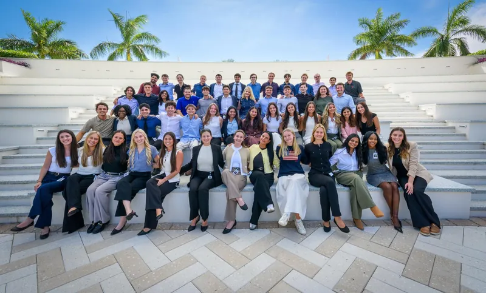
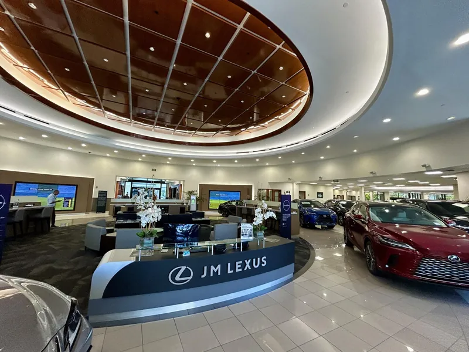
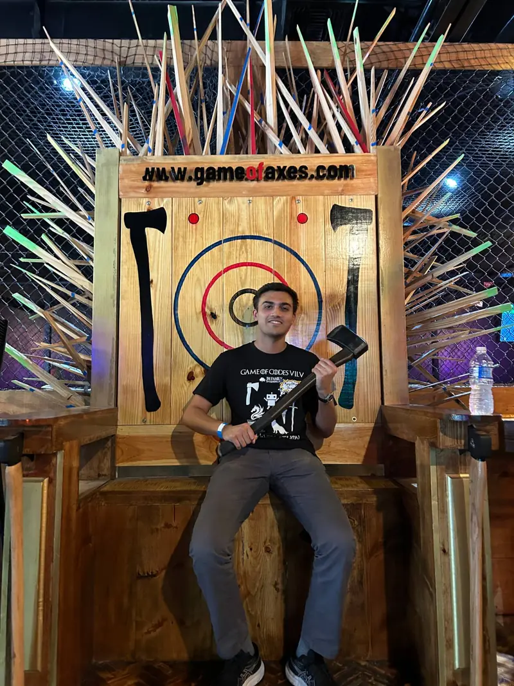
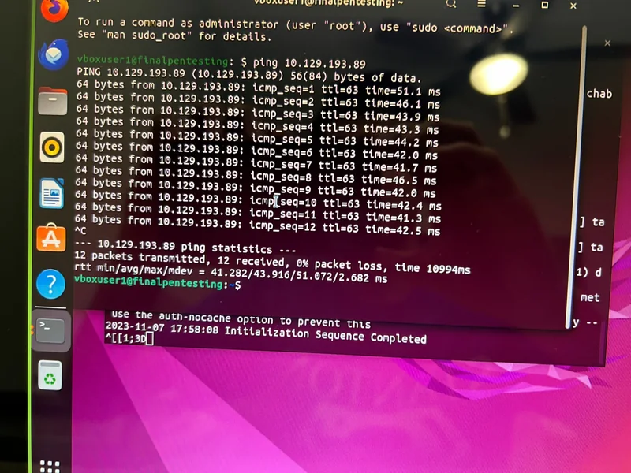
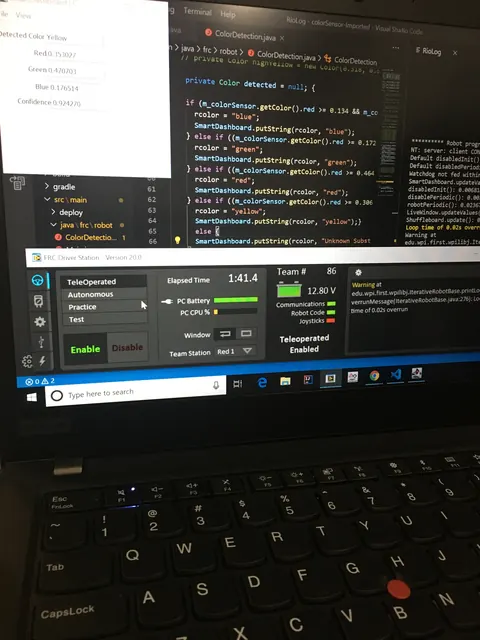
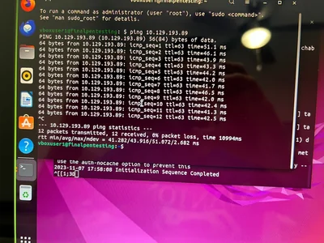
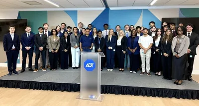

I build software that feels thoughtful, reliable and good to use.
The path so far
Eight roles since 2019. Tap one for the story.
Education · December 2026
University of FloridaB.S. in Computer Science, with the UF AI Certificate
Things I’ve built
Things I built to understand how they work.
Off the clock
Repairs, teardowns and builds, off the clock. Tap a story.
“I hope I never run out of things I don’t understand.”
What keeps me building
Skills
Tap a skill to see where I’ve used it.
Dots mark skills used on the job
Kind words
From managers, mentors and teammates. Swipe for the next.
Ajay consistently exceeded expectations … always open to feedback, eager to learn, and quick to offer fresh ideas … I highly recommend him to any organization seeking a talented and dedicated professional.
BRBarbara RussoJM Family
Ajay has done a wonderful job at Hunter Engineering as a co-op. He did a full design of a feature to implementation with minimal guidance and excelled at every task given to him. He was instrumental in delivering value to our team and exceeded expectations of a co-op.
BMBranden MartinelliHunter Engineering
Ajay created automation that moved quality assessment data into our repository and built reports that made a real impact for our team. His focus and resolve helped us make significant progress.
DDDaniel DonaldsonSoutheast Toyota
I had the pleasure of mentoring Ajay during his internship at JM Family, and he consistently impressed me with his strong work ethic and eagerness to learn … Any team would be fortunate to have him!
SNSaleem NashawatyJM Family
Ajay consistently demonstrated enthusiasm, determination, and strong data skills. His grasp of data structures and proficiency with Microsoft Power Suite significantly contributed to our project's success.
NGNaman GoyalSoutheast Toyota
Ajay was a diligent and focused software developer in his time at Hunter Engineering. He was open to feedback, enthusiastic to learn new technologies, and thoughtful in his approach to design and problem solving.
PMPreston MisemerHunter Engineering
I was lucky enough to have Ajay as a fellow co-op during my time as a data science co-op at Hunter Engineering. Throughout, he was a great team player and demonstrated a variety of strong skills in programming and software engineering. Any company would be lucky to have him in the future!
ABAndrew ButzelHunter Engineering
Ajay was a key member of our software team, taking ownership of projects and bridging knowledge gaps. His backend automation streamlined how parent and student information is ingested.
GTGarrett TiengRobotics For All
Ajay demonstrated exceptional software engineering skills and a proactive, problem-solving approach. He delivered high-quality work and collaborated effectively across the team.
Designed an AI check to catch false alarms before emergency responders are sent out, and presented it to senior leadership.
On ADT's Salesforce platform I cleaned up data to keep it under platform limits, brought test coverage back up so releases could ship, and used AI tools like Claude and Cursor to work through a large codebase faster.
False alarmsAI dispatch check, pitched to leadership
Under the capmetadata folded into Custom Objects
CoverageApex tests back above the deploy bar
Salesforce
Apex
Custom Objects
Cursor
Claude + MCP
AI
Jan 2026 to May 2026
Hunter Engineering Company
Software Engineering Co-op, R&D · St. Louis, MO
Made it possible to reset Hunter's alignment machines remotely instead of sending someone out, across more than 100,000 units worldwide.
I designed and built the secure reset workflow myself, in C#/.NET and Blazor on Azure IoT Hub. I also fixed crashes that hit during machine setup, and moved the tests to a safer framework that removed a security and privacy risk.
100,000+units reachable worldwide
Moq → NSubstituteacross an enterprise codebase
C#/.NET
Blazor
Azure IoT Hub
IoT Edge
NSubstitute
Docker
May 2025 to Nov 2025
JM Family Enterprises
Software Engineering Intern · Deerfield Beach, FL



Made it easier to spot employees with the wrong system access.
I built an automated check in Azure that compared each person's access across Microsoft Graph, Salesforce and MuleSoft, flagged anything that didn't match company policy, and produced exception reports. I also built a service that analyzed 100k+ events from JM Lexus and Toyota dealership systems, and helped set up GPT agents to answer questions about that data.
Azure Functions
C#/.NET
Microsoft Graph
Salesforce
MuleSoft
App Insights
MCP
RAG
Jun 2024 to Aug 2024
Southeast Toyota Distributors
Software Engineering Intern · Jacksonville, FL
Helped cut tire warranty claims by 20% and save over $150k by catching costly tire package recalls before they happened.
I analyzed tire data for 51,000 vehicles into 21 reports, automated a file transfer that saved about 350 hours a year, and replaced a manual spreadsheet with a live dashboard that made data entry 5× faster.
20%fewer warranty claims
$150ksaved on prevented tire recalls
5×faster data entry
Python
SQL
Azure Blob
Amazon RDS
Power BI
VBA
May 2023 to May 2024
Florida Institute for Cybersecurity Research
AI Cybersecurity Researcher · Gainesville, FL

Helped find the weak spots in AI chatbots before bad actors could.
I built tools that automatically tested ChatGPT with inputs designed to make it misbehave, kept a catalogue of the failures we could reliably repeat, and worked on ways to detect and block them, running some of the experiments on HiPerGator, UF's supercomputer. Early, hands on experience with how AI can fail.
Python
LLM Security
Research
Mar 2022 to Jan 2023
Robotics For All
Software Engineering Intern · Palo Alto, CA
Gave volunteers back hours every week.
They were copying sign up details between forms and spreadsheets by hand, so I wrote scripts that filed each family's information automatically and sent the confirmation emails. Fewer typos, faster replies to parents, and the start of a habit: finding manual work and making it run on its own.
JavaScript
Google Apps Script
Automation
SR
Jun 2020 to Jul 2020
Shiva Robotics Academy
SEO Analyst · Remote
Grew search visits to the academy's site by 20% in one summer, so more families looking for robotics classes actually found it.
I studied what people were searching for, rewrote the parts of the site search engines read, and checked the numbers every week to see what was working.
Analytics
SEO
RJ
Sep 2019 to Feb 2020
Renaissance Jax
Software Developer · Jacksonville, FL
Gave a competition robot the ability to line itself up on its own.
I wrote the vision code that spotted targets by color mid match, so the robot could aim without the driver doing it by hand, and kept the cameras, wiring and code working together all season. My first time writing code that had to work in the real world, not just on a laptop.
C++
Computer Vision
Git
Language
SommiScript: Lightweight Programming Language
Built a custom scripting language with Python/JavaScript-inspired syntax and a lightweight Java interpreter, making it easy to experiment with language design and execution.
AI sports betting platform built on an NFL betting model, being turned into a marketplace where users build their own models, prove them against historical data, and sell access to their live picks.
Python
FastAPI
Next.js
Supabase
In progress, not public yet
Full-stack
GatorGoods Marketplace
Full-stack MERN app for UF students to buy and sell items, with secure authentication, listings, and a clean API-first design.
Implemented a file system in C++ from scratch, supporting directories and files inside WAD archives. Integrated with FUSE so it can be mounted and browsed like a real OS file system.
I’m a software engineer and a problem solver at heart. As our tools become more intelligent and capable, I think good problem solving matters more, not less. I keep learning what each problem needs while staying focused on the person using it. I care about experiences that feel thoughtful, reliable, secure, and genuinely good to use.I’m a software engineer and a problem solver at heart. I keep learning what each problem needs and stay focused on the person using it, building experiences that feel thoughtful, reliable, secure, and genuinely good to use.
Every role so far, from a robotics vision system in high school to identity infrastructure in the cloud. Tap a role to open it.
01 / 08
Sep 2019 to Feb 2020 · Jacksonville, FL
Software Developer
Renaissance Jax
Gave a competition robot the ability to line itself up on its own. I wrote the vision code that spotted targets by color mid match, so the robot could aim without the driver doing it by hand, and kept the cameras, wiring and code working together all season. My first time writing code that had to work in the real world, not just on a laptop.
C++Computer VisionGit

Jun 2020 to Jul 2020 · Remote
SEO Analyst
Shiva Robotics Academy
Grew search visits to the academy's site by 20% in one summer, so more families looking for robotics classes actually found it. I studied what people were searching for, rewrote the parts of the site search engines read, and checked the numbers every week to see what was working.
AnalyticsSEO
Mar 2022 to Jan 2023 · Palo Alto, CA
Software Engineering Intern
Robotics For All
Gave volunteers back hours every week. They were copying sign up details between forms and spreadsheets by hand, so I wrote scripts that filed each family's information automatically and sent the confirmation emails. Fewer typos, faster replies to parents, and the start of a habit: finding manual work and making it run on its own.
JavaScriptGoogle Apps ScriptAutomation
May 2023 to May 2024 · Gainesville, FL
AI Cybersecurity Researcher
Florida Institute for Cybersecurity Research
Helped find the weak spots in AI chatbots before bad actors could. I built tools that automatically tested ChatGPT with inputs designed to make it misbehave, kept a catalogue of the failures we could reliably repeat, and worked on ways to detect and block them, running some of the experiments on HiPerGator, UF's supercomputer. Early, hands on experience with how AI can fail.
PythonLLM SecurityResearch

Jun 2024 to Aug 2024 · Jacksonville, FL
Software Engineering Intern
Southeast Toyota Distributors
Helped cut tire warranty claims by 20% and save over $150k by catching costly tire package recalls before they happened. I analyzed tire data for 51,000 vehicles into 21 reports, automated a file transfer that saved about 350 hours a year, and replaced a manual spreadsheet with a live dashboard that made data entry 5× faster.
20% fewer warranty claims
$150k saved on prevented tire recalls
5× faster data entry
PythonSQLAzure BlobAmazon RDSPower BIVBA
May 2025 to Nov 2025 · Deerfield Beach, FL
Software Engineering Intern
JM Family Enterprises
Made it easier to spot employees with the wrong system access. I built an automated check in Azure that compared each person's access across Microsoft Graph, Salesforce and MuleSoft, flagged anything that didn't match company policy, and produced exception reports. I also built a service that analyzed 100k+ events from JM Lexus and Toyota dealership systems, and helped set up GPT agents to answer questions about that data.
Made it possible to reset Hunter's alignment machines remotely instead of sending someone out, across more than 100,000 units worldwide. I designed and built the secure reset workflow myself, in C#/.NET and Blazor on Azure IoT Hub. I also fixed crashes that hit during machine setup, and moved the tests to a safer framework that removed a security and privacy risk.
Designed an AI check to catch false alarms before emergency responders are sent out, and presented it to senior leadership. On ADT's Salesforce platform I cleaned up data to keep it under platform limits, brought test coverage back up so releases could ship, and used AI tools like Claude and Cursor to work through a large codebase faster.
False alarms AI dispatch check, pitched to leadership
Under the cap metadata folded into Custom Objects
Coverage Apex tests back above the deploy bar
SalesforceApexCustom ObjectsCursorClaude + MCPAI

Education
December 2026
University of Florida, B.S. in Computer Science, Herbert Wertheim College of Engineering
Earned the University of Florida AI Certificate, with coursework spanning operating systems, databases, data structures and algorithms, software engineering, artificial intelligence, and cybersecurity.
AI CertificateOperating SystemsDatabasesAlgorithms
Built a custom scripting language with Python/JavaScript-inspired syntax and a lightweight Java interpreter, making it easy to experiment with language design and execution.
LanguageJava / Language Design / Interpreters
BetAI Marketplace
AI sports betting platform built on an NFL betting model, being turned into a marketplace where users build their own models, prove them against historical data, and sell access to their live picks.
Self-balancing AVL tree with insert, delete, and lookup operations, optimized for performance and correctness.
AlgorithmsC++ / Data Structures
Custom WAD File System with FUSE Integration
Implemented a file system in C++ from scratch, supporting directories and files inside WAD archives. Integrated with FUSE so it can be mounted and browsed like a real OS file system.
SystemsC++ / FUSE / File Systems
No projects match that filter yet. .
Off the Clock
Repairs, teardowns and builds I've taken on outside of work. Tap one to see how it went.
Learning electronics by building (and breaking)
It started with one screen saying hello, and turned into a habit of opening things up to see how they work, including one lesson about heat I learned the hard way.
Hello, world. My first real Arduino circuit. Wired it up, flashed it, and the screen said hello back.
The dead drive. I hooked an old hard drive up to my laptop to recover its data. It wouldn't power on, and the problem looked like the board itself.
The homemade soldering iron. Fixing that board meant soldering, and I didn't own an iron, so I built one: pencil lead, an old phone charger and wrapped wire. It got hot. So did my fingers.
Why did it stop? Our dehumidifier died, so I took it apart to find out how it actually works. A crash course in Peltier cooling and thermodynamics.
Just for fun. Bored one day, I gutted an old laptop nobody at home was using anymore and gave myself one goal: get the smallest operating system I could find running on it. No reason. Just curiosity.
The idea. College group project: pick an idea and build it. Ours was a toilet lid that opens on its own when you walk up.
The prototype. Our working prototype: walk up and the lid lifts, over a bowl we 3D printed.
Bringing a MacBook back from the dead
It started with a dead memory slot on my 2011 MacBook Pro's board. Rather than settle for a repair, I put a 2012 logic board in the 2011 body, something it was never built to take, shaved down a connector to make it fit and tracked down why it wouldn't boot. It came back as a 2012, faster graphics and memory included, now running a macOS Apple never released for it.
Gutted. Everything out. The hard drive became an SSD and the battery was replaced.
Fresh paste. Thermal paste is what carries heat off the processor. Years old, it had dried out, and a chip that can't shed heat runs hot and slows itself down. I took the board out, cleaned the old paste off and put fresh paste on.
Making it fit. The 2012 board was never meant to go in a 2011 body, and its display connector simply didn't fit. So I literally took a sheet of sandpaper and filed the connector's edges down by hand, a little at a time. File too far and I'd wear through the insulation and short the board, or crack the fragile connector for good. It clicked in.
Stuck at boot. First attempt: it powered on but wouldn't boot properly, so it was back to troubleshooting to track down the fault.
It boots. With the fault fixed, it came up as a 2012. Then I went one step further and unofficially installed macOS Sonoma, a version Apple never supported on this model. One less laptop in a landfill.
Working on my own car
A 2007 Honda Civic closing in on 200,000 miles, and a habit of trying the fix myself before calling in a mechanic. Every repair started the same way: a symptom, hours of research and tutorials, then doing it myself until it worked.
AC out, mid summer. The AC quit in the middle of summer. Ninety degree heat, a low pressure refrigerant gauge and an electrical check on the compressor clutch, working through it one tutorial at a time.
First engine work. My first time working inside an engine. This is what a spark plug looks like after almost 200,000 miles.
Running rough. The engine was running rough. Hours of troubleshooting, well past midnight, came down to a dirty throttle body. One careful cleaning later, it was running noticeably better.
What 180,000 miles leaves behind. The transmission had never had its fluid changed. Grinding, violent shaking, jerky shifts and a transmission code. When the drain plug came out, its magnet was coated in burnt black sludge: raw metal shavings from inside the transmission.
Fresh fluid. After weeks of research, a drain and fill with fresh fluid. It shifted buttery smooth again, and I saved about $2,000.
"I hope I never run out of things I don’t understand."
Skills & Tools
Open a folder, then tap a skill to see where I've used it.
Ajay consistently exceeded expectations … always open to feedback, eager to learn, and quick to offer fresh ideas … I highly recommend him to any organization seeking a talented and dedicated professional.
Barbara RussoJM Family
BM
Ajay has done a wonderful job at Hunter Engineering as a co-op. He did a full design of a feature to implementation with minimal guidance and excelled at every task given to him. He was instrumental in delivering value to our team and exceeded expectations of a co-op.
Branden MartinelliHunter Engineering
DD
Ajay created automation that moved quality assessment data into our repository and built reports that made a real impact for our team. His focus and resolve helped us make significant progress.
Daniel DonaldsonSoutheast Toyota
SN
I had the pleasure of mentoring Ajay during his internship at JM Family, and he consistently impressed me with his strong work ethic and eagerness to learn … Any team would be fortunate to have him!
Saleem NashawatyJM Family
NG
Ajay consistently demonstrated enthusiasm, determination, and strong data skills. His grasp of data structures and proficiency with Microsoft Power Suite significantly contributed to our project's success.
Naman GoyalSoutheast Toyota
PM
Ajay was a diligent and focused software developer in his time at Hunter Engineering. He was open to feedback, enthusiastic to learn new technologies, and thoughtful in his approach to design and problem solving.
Preston MisemerHunter Engineering
AB
I was lucky enough to have Ajay as a fellow co-op during my time as a data science co-op at Hunter Engineering. Throughout, he was a great team player and demonstrated a variety of strong skills in programming and software engineering. Any company would be lucky to have him in the future!
Andrew ButzelHunter Engineering
GT
Ajay was a key member of our software team, taking ownership of projects and bridging knowledge gaps. His backend automation streamlined how parent and student information is ingested.
Garrett TiengRobotics For All
VP
Ajay demonstrated exceptional software engineering skills and a proactive, problem-solving approach. He delivered high-quality work and collaborated effectively across the team.